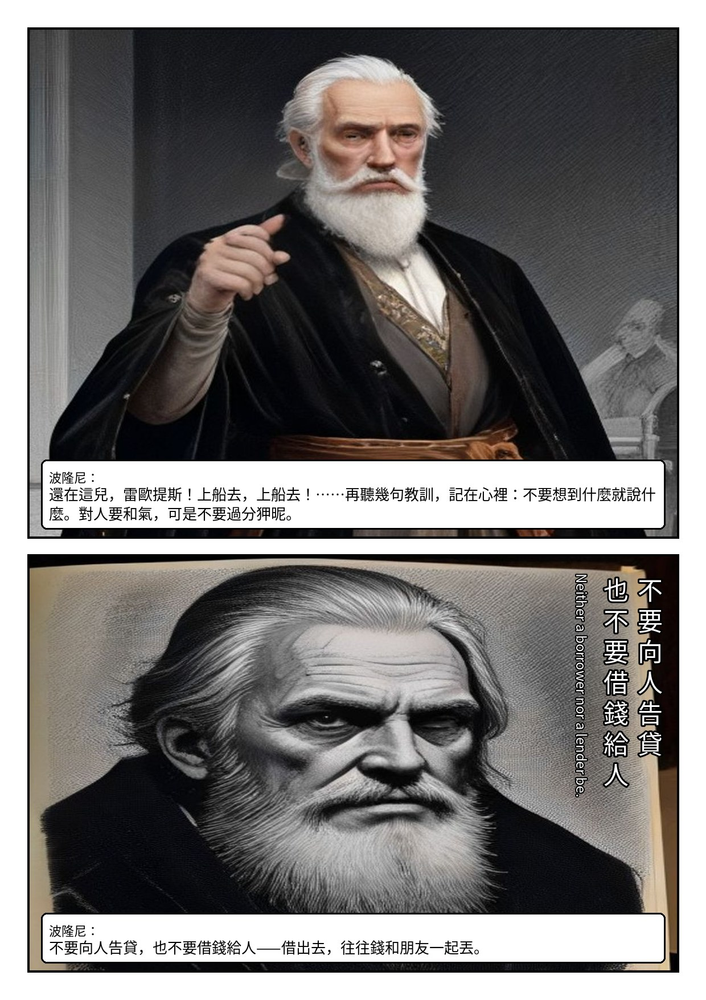
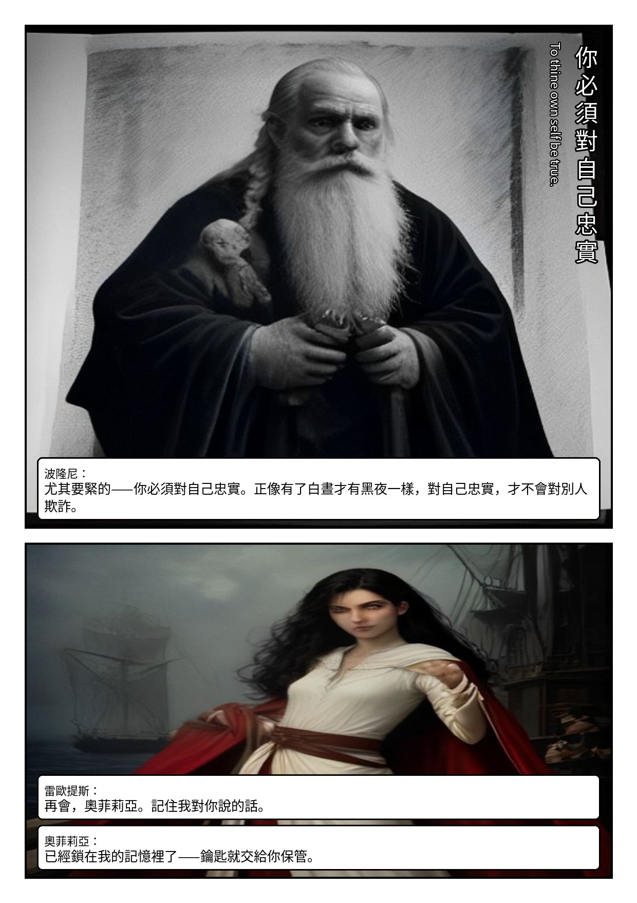

Act I · Scene III
臨別家訓A Room in Polonius' House.
❦
碼頭道別：哥哥的忠告、父親的教訓，與一句要用一生償還的順從。
本場人物奧菲莉亞・及腰散髮・淡色長裙／雷歐提斯・短捲髮・細劍／波隆尼・分叉白鬚・官鏈
首輪草稿・Pollinations 免費生圖——校構圖與對白用，角色定裝後會全面重生


Act I · Scene III
碼頭道別：哥哥的忠告、父親的教訓，與一句要用一生償還的順從。
本場人物奧菲莉亞・及腰散髮・淡色長裙／雷歐提斯・短捲髮・細劍／波隆尼・分叉白鬚・官鏈
首輪草稿・Pollinations 免費生圖——校構圖與對白用，角色定裝後會全面重生

